Praktikum 3: Input Widgets & Forms dengan Validasi
A. Pendahuluan
Pengembangan aplikasi mobile menggunakan Flutter umumnya melibatkan formulir sebagai sarana utama untuk menerima data dari pengguna. Pada praktikum ini, pembahasan diarahkan pada pemanfaatan Input Widgets & Forms, terutama penerapan widget Form dan GlobalKey untuk mengelompokkan, mengatur, serta memvalidasi beberapa komponen input dalam satu kesatuan. Selain itu, TextFormField digunakan sebagai elemen masukan teks yang memiliki dukungan validasi bawaan, sedangkan TextEditingController berfungsi untuk mengambil, memantau, dan mengelola teks yang dimasukkan pengguna.
Studi kasus yang digunakan adalah pembuatan halaman formulir Catat Transaksi Baru pada aplikasi Expense Tracker. Formulir tersebut menyediakan beberapa jenis masukan, seperti kolom judul transaksi, kolom nominal dengan konfigurasi papan ketik numerik, serta pilihan kategori melalui DropdownButtonFormField. Sebagai pengembangan tambahan, bagian tugas juga menerapkan fitur pemilihan tanggal transaksi menggunakan showDatePicker, dengan format tanggal DD/MM/YYYY.
Setiap komponen input dilengkapi mekanisme validasi untuk memastikan pengguna tidak mengirimkan data kosong maupun nilai nominal dengan format yang tidak valid. Setelah seluruh data dinyatakan sesuai, informasi transaksi dapat diproses dan hasilnya ditampilkan kepada pengguna melalui notifikasi SnackBar.
B. Tujuan
- Memanfaatkan TextEditingController untuk membaca, menyimpan, dan mengatur teks yang dimasukkan oleh pengguna.
- Menggunakan DropdownButtonFormField sebagai menu pilihan kategori transaksi dengan daftar opsi yang telah ditentukan sebelumnya.
- Menambahkan aturan validasi pada setiap kolom formulir agar data kosong atau input yang tidak sesuai ketentuan, termasuk penggunaan huruf pada kolom nominal, dapat ditolak.
- Menerapkan showDatePicker untuk menampilkan kalender interaktif sehingga pengguna dapat memilih tanggal transaksi dengan pola penulisan DD/MM/YYYY.
- Menjadikan Form dan GlobalKey sebagai pusat pengelolaan formulir untuk mengatur sekaligus memeriksa seluruh input secara terpadu.
C. Langkah Pengerjaan
a. Praktikum
1) Membuat File add_transaction_screen.dart
Buatlah berkas baru bernama add_transaction_screen.dart sebagai tempat untuk mengembangkan halaman penambahan transaksi.
2) Menyiapkan State dan Controller
Pada tahap ini, deklarasikan berbagai variabel yang diperlukan di dalam class _AddTransactionScreenState. Variabel _formKey berfungsi sebagai identitas unik untuk mengakses dan memeriksa seluruh isi formulir. Selanjutnya, buat dua TextEditingController untuk membaca data dari kolom judul serta nominal transaksi. Sementara itu, variabel _selectedCategory diberi nilai awal Makanan sebagai kategori yang dipilih secara default pada menu dropdown.
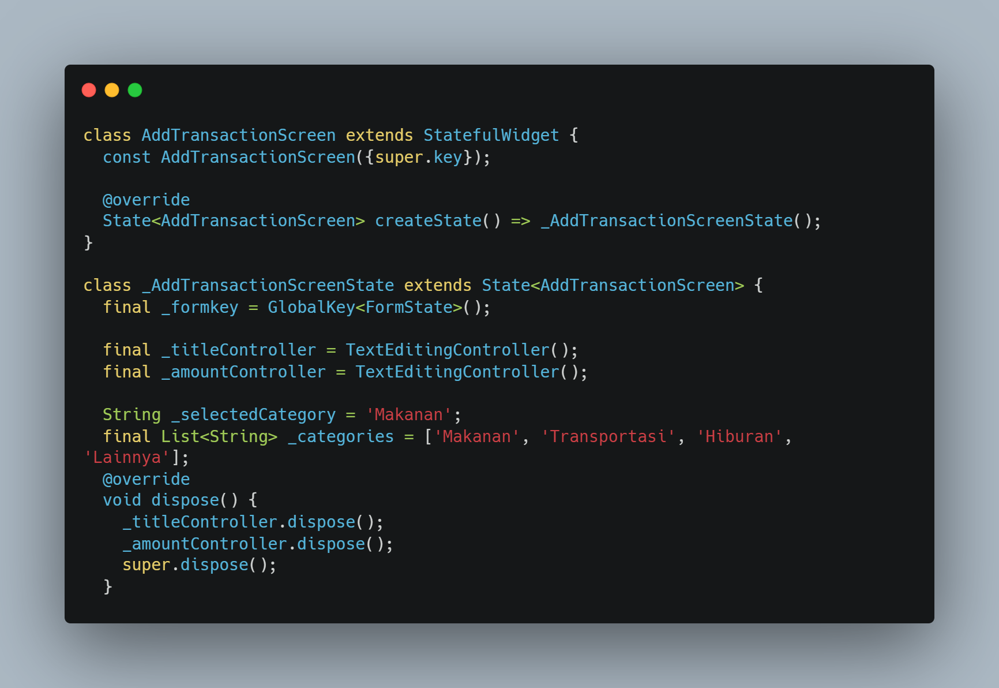
3) Membangun Field Masukan dengan TextFormField
Tambahkan dua kolom input TextFormField ke dalam widget Form yang menggunakan _formKey. Kolom pertama digunakan untuk memasukkan nama atau judul transaksi dan dilengkapi aturan agar tidak boleh dibiarkan kosong. Kolom kedua digunakan untuk mengisi jumlah nominal, dengan pengaturan TextInputType.number agar kibor numerik muncul. Field nominal tersebut memiliki validasi berlapis untuk memeriksa apakah input telah diisi dan apakah nilainya benar-benar berupa angka.
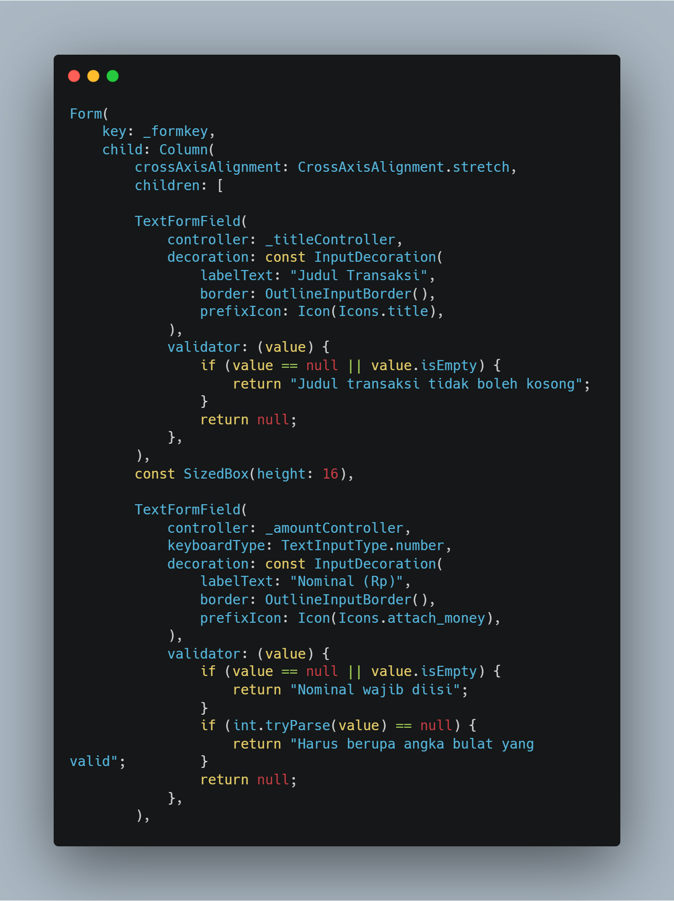
4) Menambahkan Dropdown dan Tombol Penyimpanan
Gunakan DropdownButtonFormField untuk menampilkan daftar kategori transaksi. Setiap perubahan pilihan akan memperbarui nilai _selectedCategory. Setelah itu, tambahkan ElevatedButton yang menjalankan proses pemeriksaan formulir melalui _formKey.currentState!.validate(). Jika semua data telah memenuhi aturan validasi, aplikasi akan menampilkan SnackBar sebagai pemberitahuan bahwa data berhasil diproses.
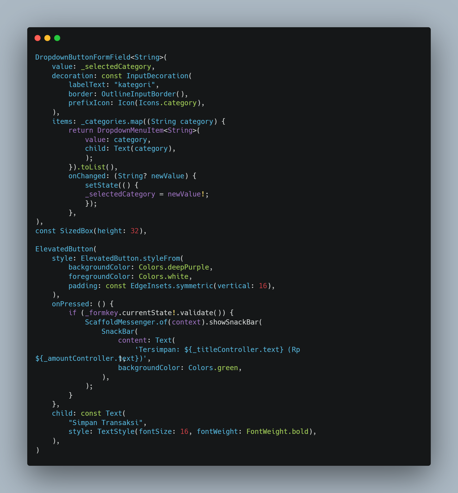
5) Hasil Tampilan Praktikum
Setelah seluruh tahapan selesai diterapkan, halaman aplikasi akan menampilkan tampilan akhir seperti pada contoh output berikut.
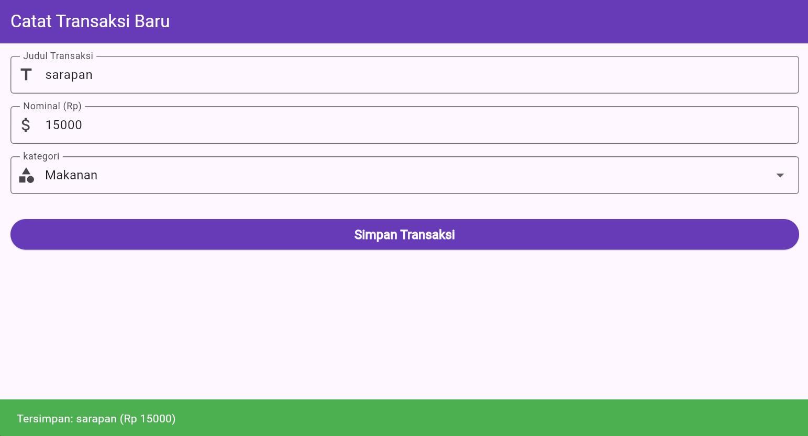
b. Tugas
1) Menambahkan Controller Baru untuk Tanggal
Tambahkan _dateController pada bagian deklarasi state untuk menampung nilai tanggal yang dipilih oleh pengguna.
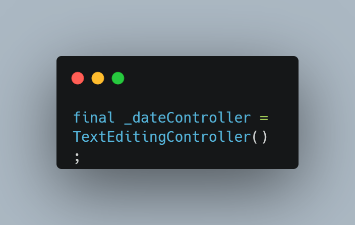
2) Membuat Proses Pemilihan Tanggal
Buat method asynchronous bernama _selectDate yang bertugas membuka kalender melalui showDatePicker. Setelah tanggal dipilih, ubah nilainya ke format DD/MM/YYYY, kemudian simpan hasilnya ke dalam controller.
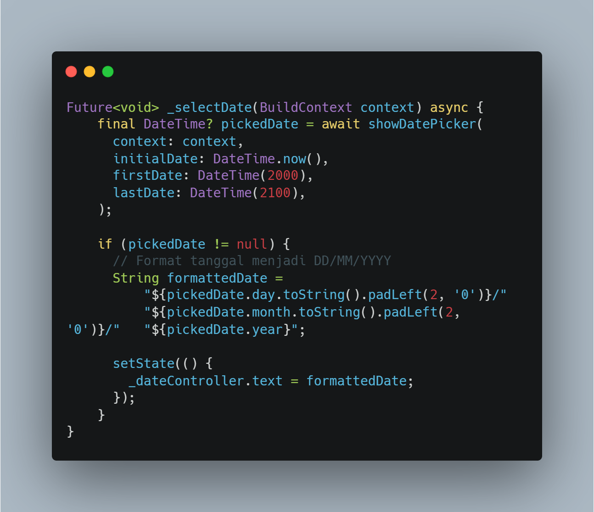
3) Mengelola Penggunaan Memori dengan Dispose
Pastikan _dateController dipanggil pada method dispose() ketika halaman tidak lagi digunakan. Langkah ini diperlukan agar controller dibersihkan dengan benar dan tidak menimbulkan kebocoran memori.
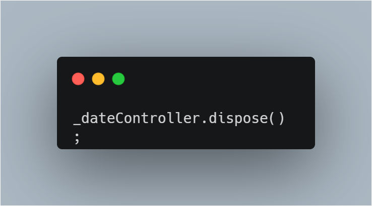
4) Menambahkan Field untuk Tanggal
Letakkan TextFormField baru sebelum tombol penyimpanan. Atur properti readOnly menjadi true supaya pengguna tidak dapat mengetik tanggal secara manual dan kibor tidak ditampilkan. Hubungkan event onTap dengan _selectDate agar kalender muncul ketika kolom ditekan, serta tambahkan validasi untuk memastikan tanggal tidak boleh kosong.
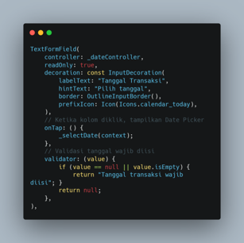
5) Menyesuaikan Isi SnackBar
Ubah pesan notifikasi keberhasilan dengan menyertakan nilai dari _dateController.text, sehingga tanggal transaksi yang dipilih turut ditampilkan kepada pengguna.
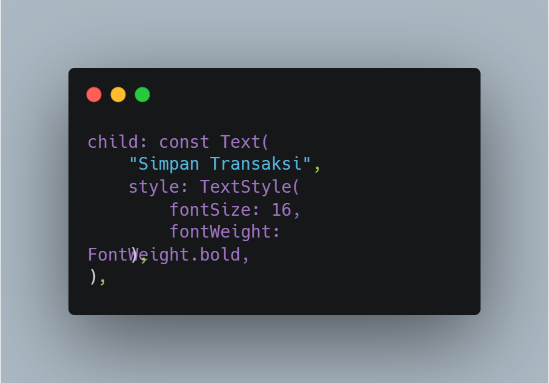
6) Hasil Akhir dengan Fitur Tanggal
Setelah semua perubahan diterapkan, hasil tampilan aplikasi akan terlihat seperti contoh output yang ditunjukkan berikut. Aplikasi kini memiliki fitur pemilihan tanggal yang terintegrasi dengan formulir transaksi.
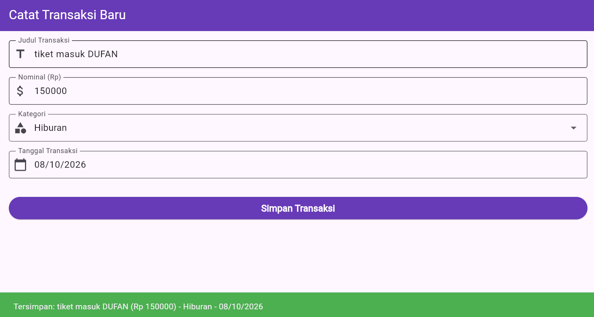
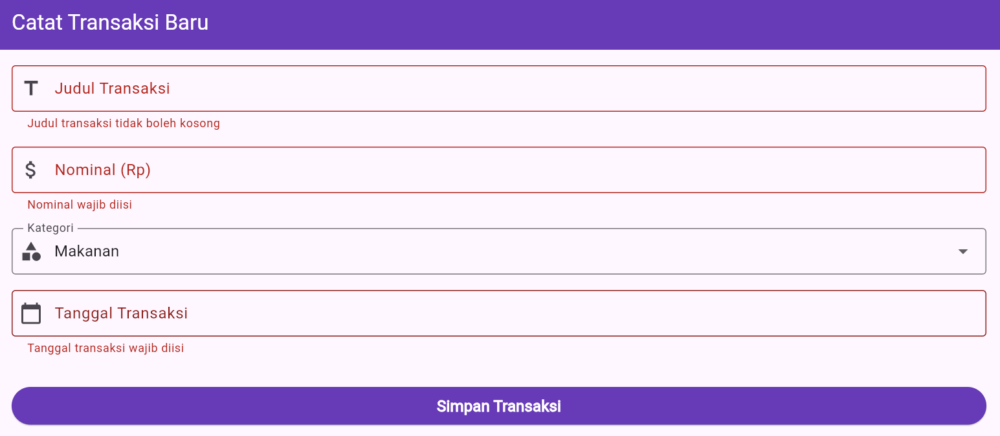
D. Kesimpulan
Berdasarkan kegiatan praktikum tersebut, dapat diketahui bahwa pembuatan formulir interaktif di Flutter dapat dilakukan secara rapi dengan menggabungkan widget Form dan TextFormField. Pemakaian GlobalKey<FormState> memudahkan pengembang dalam mengakses serta menjalankan validasi terhadap seluruh kolom secara bersamaan melalui satu aksi pada tombol simpan. Di sisi lain, pengambilan nilai dari setiap input menjadi lebih praktis dengan bantuan TextEditingController, sehingga pengembang tidak perlu memantau perubahan state secara manual.
Validasi juga memiliki peran penting dalam memastikan data yang diterima aplikasi tetap benar dan sesuai aturan. Melalui proses ini, kolom yang belum diisi dapat ditolak, sedangkan nilai nominal dapat dibatasi agar hanya menerima angka dan diperiksa menggunakan int.tryParse. Penambahan fitur showDatePicker pada bagian latihan atau tugas memperlihatkan bahwa Flutter mampu menyediakan mekanisme input tanggal yang lebih mudah dan nyaman digunakan.
Dengan demikian, praktikum ini menghasilkan halaman pencatatan transaksi yang memiliki komponen input lengkap, dilengkapi perlindungan terhadap kesalahan format data, serta memiliki struktur yang dapat dikembangkan ke tahap berikutnya, termasuk penyimpanan informasi ke dalam basis data.